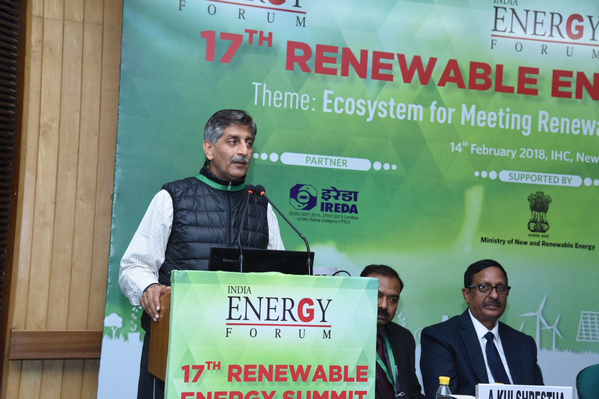

Our Team
Executive
- Mr. Joy Manglani {Chemical Engineer, B Tech., IIT Delhi}

Guiding Team
- Mr. Ashish Kothari, Founder of Kalpavriksh, Greenpeace India Chairman
- Mr. Joy Manglani, B.Tech-IIT Delhi, Scientist, Inventor and Entrepreneur
- Mr. Nitish Mukherjee, Director, Orchard Leo Burnett Advtg.
- Mr. Prakash Chandra Tripathi, B Tech-IIT Delhi, IAS (Voluntarily Retired)
- Mr. Varun Arya, B. Tech-IIT Delhi, IIMA, Director, Aravali Institute of Management, Jodhpur
- Late Mr. Anupam Mishra, Director and Mentor at Gandhi Peace Foundation
Advisory Team
Mumbai:
- Dr. Suresh Motwani {Medical Doctor, Visionary Entrepreneur}
Delhi:
- Mr. O P Khullar {Deputy Director General, Bureau of Indian Standards} (Retired)
- Mr. Hemant Batra {Advocate; Secretary, SAARCLAW- A Lawyers Assn of SAARC countries}
- Mr. P. C. Tripathi {Joint Director General, DGFT, Ministry of Commerce, Govt. of India} (Voluntarily Retired)
Bengaluru:
- Mr. N Mukherjee {Corporate and Public Relations}
Jodhpur (Rajasthan):
- Mr. Varun Arya {B. Tech., IIT; MBA, IIM; Director of Aravali Institute of Management}
USA:
- Mr. Peter A. Relan {Leading C.T.O., Software Technology, Silicon Valley}
- Dr. Sharad Malik {Professor of Electrical Engineering and Head of Department, Princeton University}
U.K.:
- Mr. Ray Heslop (Engineering Advisor, WaterAid, London}
Geneva:
- Dr. Iftekhar Ahmed Chowdhury {Spl. Advisor to UNCTAD on Least Developed Countries, Former Ambassador of Bangladesh to the UN}
Germany:
- Dr. Doris Braun {Occupational Health & Safety}